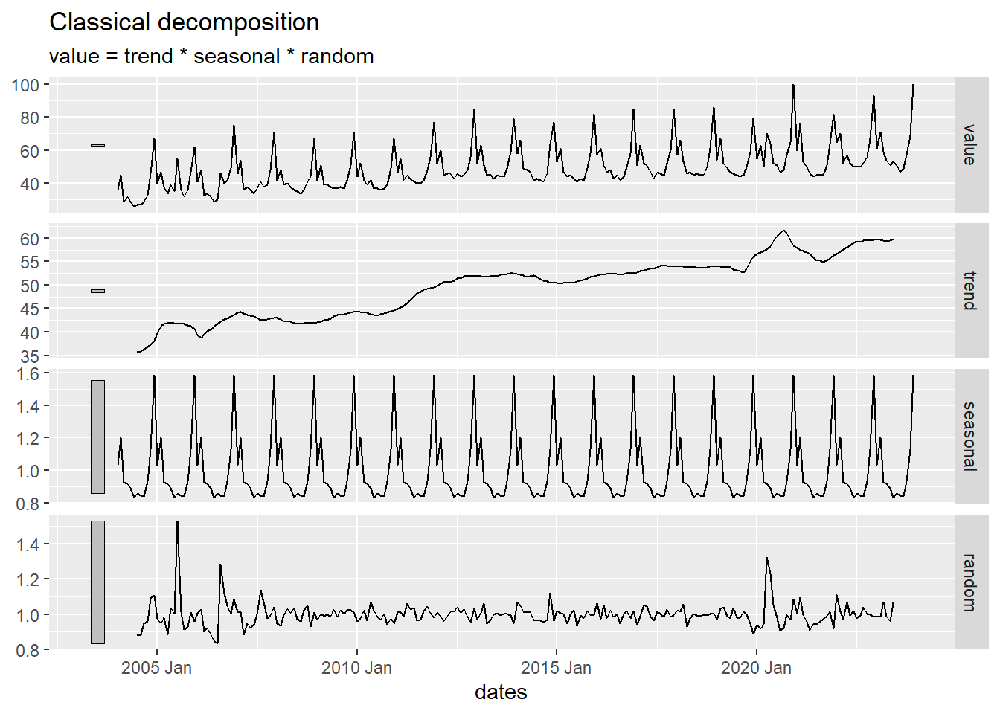
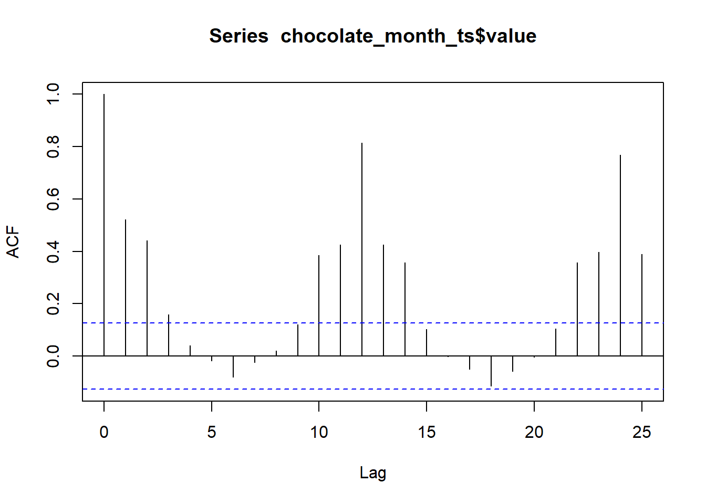
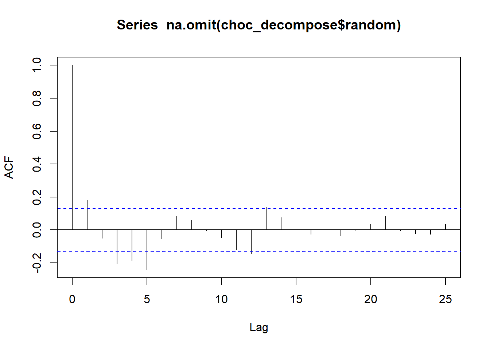

x <- c( 4.4, 4.2, 4.2, 4, 4.4, 4.7, 4.9, 5.3, 5.4, 5.5 )Exploration of Autocorrelation Concepts
Chapter 2: Lesson 3
Learning Outcomes
Explain the theoretical implications of autocorrelation for the estimation of time series statistics
- Explain how positive autocorrelation leads to underestimation of variance in short time series
- Explain how negative autocorrelation can improve efficiency of sample mean estimate
Interpret correlograms to identify significant lags, correlations, trends, and seasonality
- Create a correlogram
- Interpret a correlogram
- Define a sampling distribution
- State the sampling distribution of rk
- Explain the concept of a confidence interval
- Conduct a single hypothesis test using a correlogram
- Describe the problems associated with multiple hypothesis testing in a correlogram
- Differentiate statistical and practical significance
- Diagnose non-stationarity using a correlogram
Preparation
- Read Sections 2.2.5 and 2.3-2.5 (No new reading assignment)
Learning Journal Exchange (10 min)
- Review another student’s journal
- What would you add to your learning journal after reading your partner’s?
- What would you recommend your partner add to their learning journal?
- Sign the Learning Journal review sheet for your peer
Correlograms (10 min)
In the previous lesson, we used the following time series as an example. Here are the values in that time series:
- The table below gives the sample autocorrelation function, acf, for this data set. You may recognize some of these values from the previous lesson.
| 0 | 1 | 2 | 3 | 4 | 5 | 6 | 7 | 8 | 9 |
|---|---|---|---|---|---|---|---|---|---|
| 1 | 0.763 | 0.448 | 0.074 | -0.237 | -0.419 | -0.47 | -0.344 | -0.226 | -0.089 |
Application: Chocolate Search Trends (10 min)
Recall the Google Trends data for the term “chocolate” from the last lesson. The cleaned data are available in the file chocolate.csv.
Import the chocolate search data and convert to tsibble format
Use the code below to import the data and convert it into a time series (tsibble) object.
# load packages
if (!require("pacman")) install.packages("pacman")
pacman::p_load("tsibble", "fable",
"feasts", "tsibbledata",
"fable.prophet", "tidyverse",
"patchwork", "rio")
# read in the data from a csv and make the tsibble
# change the line below to include your file path
chocolate_month_ts <- rio::import("https://byuistats.github.io/timeseries/data/chocolate.csv") |>
mutate(
dates = yearmonth(ym(Month)),
month = month(dates),
year = year(dates),
value = chocolate
) |>
dplyr::select(dates, month, year, value) |>
as_tsibble(index = dates)
choc_decompose <- chocolate_month_ts |>
model(feasts::classical_decomposition(value,
type = "add")) |>
components()
autoplot(choc_decompose)
Here are the values of the acf for the chocolate search data:
acf(chocolate_month_ts$value, plot=FALSE, type = "correlation", lag.max = 25)
Autocorrelations of series 'chocolate_month_ts$value', by lag
0 1 2 3 4 5 6 7 8 9 10
1.000 0.522 0.440 0.159 0.041 -0.018 -0.081 -0.024 0.020 0.121 0.386
11 12 13 14 15 16 17 18 19 20 21
0.425 0.814 0.426 0.357 0.103 -0.001 -0.051 -0.114 -0.057 -0.003 0.104
22 23 24 25
0.358 0.398 0.768 0.389 Here is the associated correlogram:
acf(chocolate_month_ts$value, plot=TRUE, type = "correlation", lag.max = 25)
If we consider only the random component of this time series, the correlogram is:
acf(choc_decompose$random |> na.omit(), plot=TRUE, type = "correlation", lag.max = 25)
Small Group Activity: BYU-Idaho On-Campus Enrollment (25 min)
The official number of on-campus BYU-Idaho students each semester is given in the file byui_enrollment.csv.
Homework Preview (5 min)
- Review upcoming homework assignment
- Clarify questions